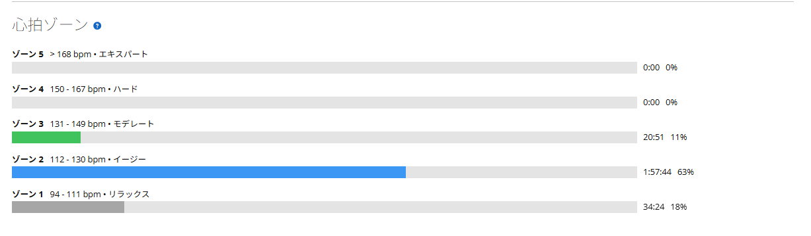

3時間走ってゾーン4はゼロ。写真も1枚も撮らなかったMTB
今日はMTB。ここ最近は60秒ON／30秒OFF、SST25分×2、テンポ走と、かなり「練習」っぽい日が続いていた。そのあと軽いローラーと、実家のクロスバイクでポタリング。そして今日は山へ。
結論から言えば、かなりいい1日だった。速く走ったわけではない。パワーを揃えたわけでもない。タイムを狙ったわけでもない。友人と仕事やプライベートの話をしながら、いつも通りダラダラ登る。それだけである。でも、こういう日もやっぱり必要だと思う。

42.28km・3時間05分・獲得589m
- 全体42.28km / 3時間05分01秒 / 移動2時間39分07秒 / 運動負荷75
- 速度・標高平均13.7km/h / 移動平均15.9km/h / 最高36.0km/h / 獲得589m
- 心拍・回転平均118bpm / 最大149bpm / 平均77rpm
- 環境平均22.0℃ / 最低20.0℃ / 最高29.0℃ / 推定発汗1,677ml
- 効果有酸素TE2.8 / 無酸素TE0.0
3時間走っているが、強度はかなり低め。全体3時間05分に対して移動時間は2時間39分なので、26分ほどはどこかで止まっている計算になる。倒木があったので回避したり、柵を開けたり締めたりした記憶が。ロードの練習ならこの26分は「無駄」に見えるが、今日はこれが本体である。
山はいつも通りダラダラ登る
今日も登りはいつも通り。友人と話しながらダラダラ登る。仕事のこと、プライベートのこと、最近どうなのか。そんな話をしながら淡々と上る。MTBでこういう登り方をしていると「練習している」という感覚はほとんどない。それでも気づけば結構な時間が経っていて、獲得標高もそれなりになる。今日も589m。
ロードなら出力やタイムが気になるが、MTBではかなり気持ちが違う。山の中を走る。友人と話す。たまに止まる。また走る。今日はそれで十分だった。
なお、このブログではMTBで行った山の名前は書かないことにしている。独自の峠名のようなものも出さない。MTBはそういう場所への配慮がある世界なので、ここでは場所を特定できない書き方をしておく。走った内容と数字だけ残せば、記録としては足りる。
3時間走っても、ほぼゾーン2
今回ちょっと面白いのが心拍だった。平均118bpm、最大149bpm。3時間05分走って、ゾーン4以上はゼロである。
- 心拍ゾーンZ3 20分51秒（11%）/ Z2 1時間57分44秒（63%）/ Z1 34分24秒（18%）
- Z4以上0分00秒

つまり、ほぼ2時間は低強度有酸素だった。週の前半は60/30で高出力、SSTで持続、テンポで仕事量と、かなり負荷を入れていた。そのあと軽いローラー、クロスバイクでポタリング、そして今日のMTB。強度を落としながら、脚は動かす。かなり自然な流れになったと思う。
ただし、MTBは操作や路面対応で疲れるので、単純に「回復走」とは言い切れない。上半身も使うし、集中もしている。それでも今回の心拍を見る限り、心肺には大きな負担をかけずに長時間走れた。
雨続きで路面は良くない。帰ったら洗う
最近は雨が多かった。当然、山の路面もあまり良くない。乾いているところもあれば、湿っているところもあるし、滑りやすそうな場所も泥もある。こういう日は速さよりも、転ばず帰ることの方が大事だ。MTBは路面が悪いほど操作が難しくなるので、今日は無理せず路面を見ながら走った。
結果として今日は一度も転倒なし。無事に帰ってこられた。何事もなく帰宅できた、それだけで十分成功だったと思う。
そして当然、MTBはしっかり汚れた。さすがにそのまま放置はできないので、帰宅後に掃除。今回みたいなコンディションなら汚れるのは仕方ないし、むしろMTBに乗る以上ある程度はセットである。山で遊ぶ、帰る、洗う。そこまで含めて今日のライドだった。
写真は1枚もない
そして今日、ブログを書く段階で気づいた。写真を1枚も撮っていない。本当にゼロである。
いつもなら自転車、山、休憩、猫と、何かしら撮っている。今日は友人と話しながら走って、そのまま帰ってきた。完全に忘れていた。まあ、こういう日もある。むしろ写真を撮らなかったということは、それだけ普通にMTBを楽しんでいたということにしておく。
というわけで、この記事に載っているのはGarminのスクリーンショットだけである。文字とグラフしかない記事。たまにはそれもいい。
今日やってみて思ったこと
3時間、42.28km、獲得589m。それでも平均心拍118bpm。かなりゆっくりである。友人と仕事やプライベートの話をしながら、いつも通りダラダラ登った。雨続きで路面は良くなかったが、一度も転ばず帰ってこられた。写真は1枚も撮っていない。そして帰宅後は泥だらけのMTBを掃除。
特別なことは何もない。でも、こういう日が結構好きだ。ロードの練習みたいに「今日は何W」「何分」「何本」と考えなくていい。ただ山へ行って、話して、走って、帰る。最近は練習がゲームみたいで楽しいと書いたが、今日はそのゲームを少し休んで、普通に遊んできた。そんな感じの1日だった。
次に見るポイント
- 翌日の脚MTB3時間のあとに疲労がどの程度残るか
- 高強度への復帰長時間低強度のあとでもロードの高強度へ戻せるか
- 疲労との両立高強度週のあとでもMTBを悪化要因にせず楽しめるか
- 路面判断雨上がりで無理をしない判断を続けられるか
- 次回の課題写真を1枚くらい撮る